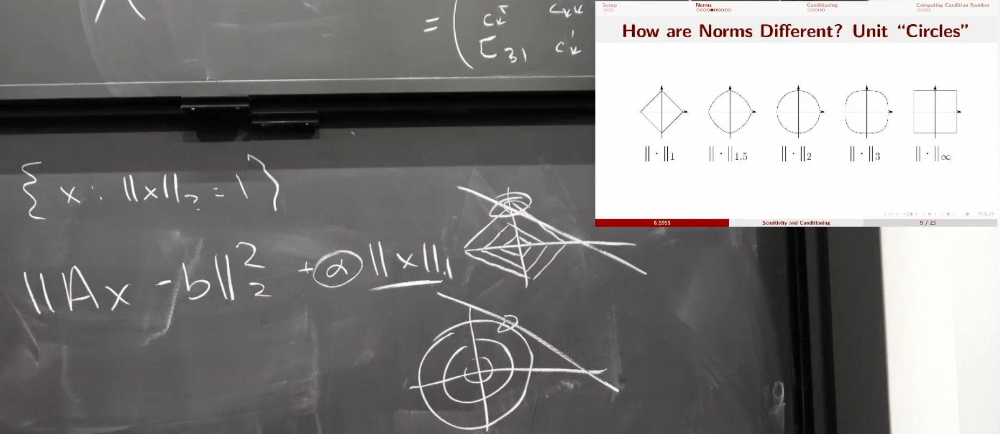

Condition number for linear systems
Sensitivity and Conditioning
Gaussian elimination works in theory, but what about floating point precision?
How much can we trust \(x_0\) if \(0<||Ax_0 - b||_2 \ll 1\)(backwards error)?
Perturbation Analysis
How does \(x\) change if we solve \((A + \delta A)x = b + \delta b\)?
Two viewpoints:
- Thanks to floating point precision, \(A\) and \(b\) are approximate.
- If \(x_0\) isn't the exact solution, what is the backward error?
What is "Small"
Vector norm
A function \(||\cdot||: \mathbb{R}^n \rightarrow [0, \infty)\) satisfying: 1. \(||x|| = 0 \text{ iff } x = 0\) 2. \(||cx|| = |c| \cdot ||x|| \forall c \in R, x \in \mathbb{R}^n\) 3. \(||x+y|| \leq ||x|| + ||y|| \forall x, y \in \mathbb{R}^n\)
Most Common Norm
\[ ||x||_2 = \sqrt{x_1^2 + \cdots + x_n^2} \]
p-Norms
For \(p \geq 1\), \[ ||x||_p = (|x_1|^p + \cdots + |x_n|^p)^{\frac{1}{p}} \] Taxicab/Manhattan norm: \(||x||_1\)
 在图里的这个例子里，使用不同的norm得到的\(x\)的元素分布不一样。如果使用1-norm，得到的会是有很多0的稀疏向量。如果使用2-norm，结果就是更有可能是稠密的。
How are Norms the Same
Equivalent norms
Two norm \(||\cdot|| \text{ and } ||\cdot||'\) are equivalent if there exist constants \(c_{\text{low}}, c_{\text{high}} > 0\) such that \(c_{\text{low}}||x|| \leq ||x||' \leq c_{\text{high}}||x|| \text{ for all } x\in \mathbb{R}^n\).
Theorem: All norms on \(\mathbb{R}^n\) are equivalent.
Matrix Norms: "Unrolled" Construction
\[ A\in \mathbb{R}^{m\times n} \leftrightarrow a(:) \in \mathbb{R}^{mn}\\ ||A||_{\text{Fro}} = \sqrt{\sum_{ij}a_{ij}^2} \]
Matrix Norms: "Induced" Construction
\[ ||A||:= \max{\{||Ax||: ||x|| = 1\}} \] 可以写成优化问题： \[ \max ||Ax||_2 \text{ s.t. } \frac{1}{2}||x||_2 = \frac{1}{2} \] 使用拉格朗日乘子法： \[ n(x, \lambda) = \frac{1}{2}x^TA^TAx - \lambda x^Tx\\ \nabla n(x, \lambda) = A^TAx - \lambda x = 0\\ \Rrightarrow A^TAx = \lambda x\\ \text{So } \lambda = \text{ largest eigenvalue of } A^TA\\ \begin{aligned} ||A||_2 &= \sqrt{x^TA^TAx}\\ &= \sqrt{\lambda} \sqrt{x^Tx}\\ &= \sqrt{\lambda}\\ &= \sqrt{\text{max eigenvalue of } A^TA} \\ &= \sqrt{\text{biggest singular value of } A} \end{aligned} \]
Other Induced Norms:
\[ ||A||_1 = \max_{j} \sum_{i}|a_{ij}|\\ ||A||_{\infty} = \max_{i} \sum_{j}|a_{ij}|\\ \]
\[ \begin{aligned} ||A||_\infty &= (\max_x ||Ax||_\infty \text{ s.t. } ||x||_\infty = 1) \\ &= (\max_{x, i} |(Ax)_i| \text{ s.t. } |x_j| \leq 1 \forall j)\\ &= \max_{x,i} |\sum_{j} A_{ij}x_j| \text{ s.t. } |x_j| \leq 1 \forall j\\ &\le \max_{x,i} \sum_{j} |A_{ij}||x_j| \text{ s.t. } |x_j| \leq 1 \forall j\\ &\le \max_{x,i} \sum_{j} |A_{ij}| \text{ s.t. } |x_j| \leq 1 \forall j\\ \end{aligned} \]
Take \(x_j = \text{sign}(A_{ij})\), then the less-than-equal-to becomes equal-to.
All matrix norms are equivalent. These are the special cases of vector norms.
\[ \mathbb{R}^{m\times n} \cong \mathbb{R}^{mn}\\ \]
Lemma
Suppose \(||A||\) is induced.
\[ \forall v\neq 0, ||Av|| = ||v|| \cdot ||A\frac{v}{||v||}|| \leq ||A|| \cdot ||v|| \]
\(||A\frac{v}{||v||}|| \leq ||A||\) is the definition of induced norm.
\[ \begin{aligned} ||AB|| &= \max_{||x|| = 1} ||A(Bx)|| \\ & \leq \max_{||x|| = 1} ||A|| \cdot ||Bx|| \\ & = ||A|| ||B|| \end{aligned} \]
Model Problem
\[ \begin{aligned} (A+\epsilon \delta A)\mathbf{x}(\epsilon) &= b + \epsilon \delta b\\ &\downarrow{\frac{d}{d\epsilon}} &\\ \delta A \mathbf{x}(\epsilon) + (A + \epsilon \delta A) \mathbf{x}'(\epsilon) &= \delta b\\ &\downarrow{\epsilon = 0} &\\ \delta A \mathbf{x}(0) + A \mathbf{x}'(0) &= \delta b\\ &\Rightarrow \mathbf{x}'(0) = A^{-1}\delta b - A^{-1}\delta A \mathbf{x}(0)\\ \end{aligned} \]
According to Taylor's formula: \[ x(\epsilon) = x(0) + \epsilon x'(0) + O(\epsilon^2) \]
Relative error: \[ \begin{aligned} \frac{||x(\epsilon) - x(0)|| }{||x(0)||} &= \frac{||\epsilon x'(0) + O(\epsilon^2)||}{||x(0)||} \\ &= \frac{||\epsilon (A^{-1}\delta b - A^{-1}\delta A \mathbf{x}(0)) + O(\epsilon^2)||}{||x(0)||} \\ & \leq \frac{|\epsilon|}{||x(0)||} (||A^{-1}\delta b|| + ||A^{-1}\delta A \mathbf{x}(0)||) + O(\epsilon^2) \\ & \leq \frac{|\epsilon|}{||x(0)||} (||A^{-1}|| \cdot ||\delta b|| + ||A^{-1}|| \cdot ||\delta A|| \cdot ||x(0)||) + O(\epsilon^2) \\ & \leq |\epsilon| \cdot ||A^{-1}|| \cdot ||A|| \cdot (\frac{||\delta b||}{||A|| \cdot ||x(0)||} + \frac{||\delta A||}{||A||}) + O(\epsilon^2) \\ \end{aligned} \] Since \(||A|| \cdot ||x(0)|| \geq ||Ax(0)|| = ||b||\),
\[ \begin{aligned} &\leq |\epsilon| \cdot ||A^{-1}|| \cdot ||A|| \cdot (\frac{||\delta b||}{||b||} + \frac{||\delta A||}{||A||}) + O(\epsilon^2)\\ & = |\epsilon| k D + O(\epsilon^2) \end{aligned} \]
\((\frac{||\delta b||}{||b||} + \frac{||\delta A||}{||A||})\) is the relative error of input.
\(||A^{-1}|| \cdot ||A||\) is the condition number.
\[ ||A^{-1}|| \neq \frac{1}{||A||} \]
Small \(k \Rightarrow x\) stable to changes in \(b, A\).
Condition Number
The condition number of \(A\in \mathbb{R}^{n\times n}\) for a given matrix norm \(||\cdot||\) is \(cond(A) = ||A^{-1}|| \cdot ||A||\).
Relative change: \[ D :=\frac{||\delta b||}{||b||} + \frac{||\delta A||}{||A||}\\ \frac{||x(\epsilon) - x(0)|| }{||x(0)||} \leq \epsilon \cdot D \cdot k + O(\epsilon^2) \] Invariant to scaling (unlike determinant!); one for the identity.
Condition Number of Induced Norms
Because \[ \max_{||x||_2 = 1} ||A^{-1}x||_2 = \frac{1}{\min_{||x||_2 = 1} ||Ax||_2} \] \[ cond(A) = (\max_{\mathbf{x}\neq 0} \frac{||A\mathbf{x}||}{||\mathbf{x}||} )(\min_{\mathbf{y}\neq 0} \frac{||A\mathbf{y}||}{||\mathbf{y}||} )^{-1} \]
Chicken \(\Leftrightarrow\) Egg
Computing \(||A^{-1}||\) typically requires solving \(Ax = b\), but how do we know the reliability of \(\mathbf{x}\)?
What is the condition number of computing the condition number of \(A\)?
What is the condition number of computing what the condition number is of computing the condition number of \(A\)?
Instead
Bound the condition number.
- Below: Problem is at least this hard
- Above: Problem is at most this hard
Potential for Approximation
\[ ||A^{-1}x|| \leq ||A^{-1}|| \cdot ||x|| \\ \Downarrow \\ cond(A) = ||A||||A^{-1}|| \geq \frac{||A||||A^{-1}x||}{||x||} \]
Condition number for linear systems